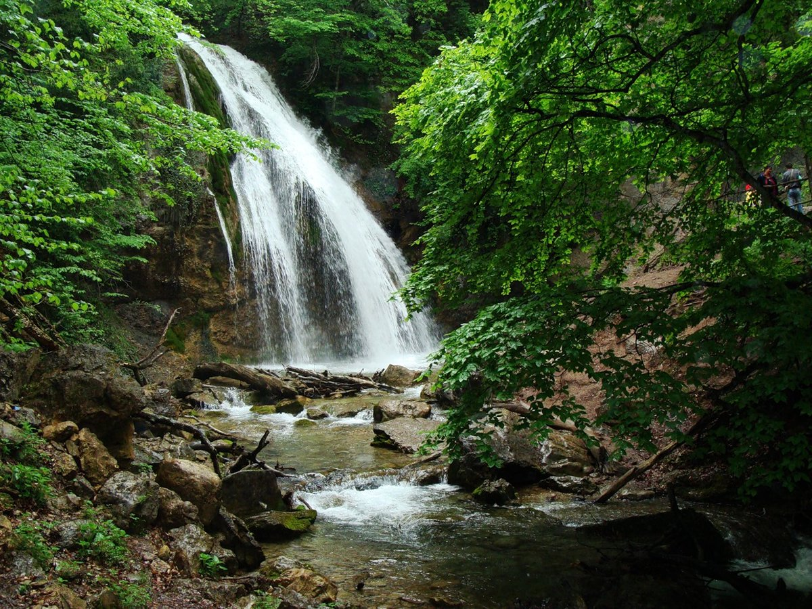

Водопад Джур-джур
Горная местность Крыма насыщена водопадами. Однако среди них есть только один, полюбоваться которым можно в любое время года. Называется он Джур-Джур. Водопад образовался на самом большом пятнадцатиметровом пороге реки Улу-Узень, совсем близко от села Генеральское Алуштинского района. Туристы, посетившие Джур-Джур, обязательно хотят искупаться под его мощными струями. Но это развлечение можно отнести к разряду экстремальных, так как вода в нём имеет температуру не более 11°С, и она настолько тяжёлая, что «обжигает» тело. Тем не менее, желающих получить подобные ощущения немало.
Как добраться?
Водопад Джур-Джур находится на высоте 468 метров выше уровня моря, в ущелье Хапхал. Доехав до села Малореченское, поворачиваете по указателям в сторону села Генеральское, 8 км и Вы на месте. Автомобиль можно оставить на стоянке и двинуться в путь пешком или нанять машину, которая Вас довезет к водопаду Джур-Джур. В среднем за перевозку берут 1400-1500 руб. Только самые отважные продолжают двигаться на личном транспорте. Пешком дойти до водопада Джур-Джур конечно можно (расстояние около 1 км), но поход под палящим крымским солнцем вряд ли доставит удовольствие. На этот случай местные жители организовали услугу по перевозке людей от села до водопада. Причём перевозка осуществляется на автомобилях марки УАЗ, учитывая особенности местного рельефа. Сама поездка пощекочет нервы, так как опытные водители осуществляют очень крутые спуски.
Остановиться можно тут.
Хапхальское ущелье
Расположен этот тихий, спокойный уголок в юго-восточной части полуострова. Раскинулся каньон в центральной части Крымской гряды, в южных предгорьях, на территории Алуштинского горсовета, немного западнее поселка Генеральское.
Переводится «Хапхал» (точнее Хаб-Хал) с татарского так: «волчья пасть». Наверное, так назвали его за странную форму каменных гребней со стороны Демерджи. Зубчатые отвесные склоны, упавшие деревья и огромные валуны, небрежно разбросанные вдоль русла Улу-Узеня, добавляют пейзажу мистики и таинственности. Кроны высоких буков задерживают солнечный свет, а стволы, обвитые плющом, похожи на частокол, построенный грозными великанами.
Ущелье Хапхал входит в состав Гидрологического заказника Хапкальский. Со стороны села Генеральского стоит кордон, за вход лесники берут экологический сбор. Чтобы обойти кордоны, пешие туристы спускаются в ущелье сверху, через Северную или Южную Демерджи, отроги Тирке-яйлы, долину реки Курлюк-Су.
Тропы хорошо читаются, маршруты промаркированы, есть оборудованные туристические стоянки. В верхней части есть отличная смотровая площадка, с которой можно полюбоваться на лежащее внизу море. Дальше дорога вниз идет практически вертикально, уровень адреналина зашкаливает.
Как добраться?
Доехать до села Генеральское из Алушты на общественном транспорте можно, воспользовавшись автобусом или маршрутным такси, следующим до курорта Рыбачье. На автомобиле едут до села Солнечногорское, поворот налево – до Генеральского. Перед подъемом местные жители советуют попросить символического разрешения у Хозяйки Хапхала. Без ее разрешения путь получится длинным и утомительным.
Остановиться можно тут.
Гора Димерджи (Долина приведений)
Направляясь из Симферополя в сторону ЮБК, проехав Ангарский перевал, по левую сторону от трассы открывается великолепный вид на гору Демерджи или Демирджи. Название горы пришло к нам из крымско-татарского языка и переводится как «кузнец».
Живописный горный массив делится на Южную Демерджи и Северную Демерджи. Вершины горы плоские, а склоны покрыты буками, грабами и редкими растениями-эндемиками. Высота горы составляет 1359 метров.
Подниматься на гору можно и по южному, и по северному склону, оба из которых исчерчены многочисленными туристическими тропками разного уровня сложности. Прогулку на гору Демерджи в Крыму лучше планировать не в самый жаркий день, так как подъём может быть несколько утомителен.
Визиткой карточкой Демерджи можно назвать Долину Привидений. Каменные идолы надёжно охраняют склоны горы от любых напастей.
Согласно древней легенде Долины Привидений, она образовалась, чтобы защитить местных жителей от набегов злых кочевников. Варвары планировали выстроить на вершине горы кузницу, где они будут ковать смертоносное оружие для своего войска. Местная девушка попробовала противостоять этому и была жестоко убита военачальником. Гора не смогла стерпеть подобного отношения и ночью произошёл сильный обвал, полностью накрывший кочевых воинов.
Утром взорам местных жителей предстали лишь огромные каменные изваяния причудливых форм. С наступлением сумерек тени от идолов оживают и начинают прогулки по склонам своих владений. Это явление и отвечает на вопрос, почему так называется долина. Её история неразрывно связана с историей самой горы Демерджи.
Как добраться?
Любой местный житель вам подскажет, где находится гора Демерджи в Крыму. Добраться сюда можно в составе экскурсионной группы, на общественном транспорте или самостоятельно на машине, для этого укажите GPS-навигатору координаты 44.747921 34.406734. Ваш главный ориентир – село Лучистое, в котором установлены указатели для туристов. Отдых в Алуште в сентябре и октябре – это самый лучший период для поездок в горы. Листва лесов на склонах начинает окрашиваться в яркие цвета, а летний зной постепенно отступает, делая пешеходные прогулки лёгкими и приятными.
Остановиться можно тут.
Дворцы и парки
В Крыму около пятнадцати дворцов, расположенных на Южном, Центральном и Восточном побережьях Крымского полуострова. Большая часть дворцов появилась в конце 19 – начале 20 века. В основном дворцы возводили по заказу семей Романовых, Юсуповых и Воронцовых, но также и купцов первой гильдии и богатых помещиков. После революции большая часть дворцов была переделана в санатории и больницы.
Одним из самых знаменитых дворцов является Ливадийский. Его без преувеличения можно назвать шедевром архитектуры. Белоснежная резиденция была воздвигнута в начале 20 века для царской семьи Романовых и прекрасно сохранилась до наших дней. Расположенный в живописнейшем месте — на холме, посреди лесов и с видом на уходящее за горизонт море — Ливадийский дворец каждый год притягивает толпы туристов.
Дворцовый комплекс, который находится примерно в пяти километрах от Ялты, известен не только своей красотой и величием, но и важными историческими событиями, происходившими здесь. Так, в 1945 году в стенах дворца состоялась знаменитая Крымская конференция с участием глав Советского Союза, Великобритании и США. А три года назад - в 2011 году - Ливадийский дворец отметил свое столетие.
Пожалуй, самая известная часть дворцового комплекса - это Итальянский дворик. Удивительное по красоте место, кстати, не раз служившее съемочной площадкой для известных российских и зарубежных фильмов.
Стоимость билетов и время работы:
Основная экспозиция Ливадийского дворца (обзорная экскурсия):
- Взрослый билет: 400 руб.
- Льготный билет (пенсионеры, студенты, школьники): 250 руб.
Время работы:
Ежедневно, кроме понедельника, 10:00 — 18:00 (апрель — июнь и октябрь). В разгар туристического сезона (июль — сентябрь) Ливадийский дворец можно посетить с 10:00 до 18:30, а с ноября по март — с 10:00 до 16:00
Как добраться?
Добраться до дворца можно как на машине, так и на автобусах. Подойдёт автобус №5, 11, 27, 32 и 47. Остановки, на которых следует сойти, называются «Ливадийский дворец», а также «Санаторий „Пограничник“»